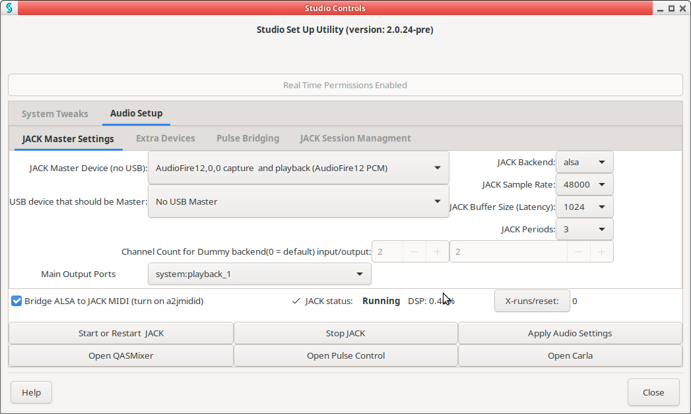

Studio Controls is a utility for setting up a system for studio use.
Allows USB microphones to work with JACK when plugged in. Desktop audio just works. Pulseaudio sees JACK as only "device", protecting JACK from extra xruns or crashing when in freewheel mode. ALSA to JACK bridging uses zita-ajbridge for superior software sync with lower CPU load. Pulseaudio to JACK bridges can have user set channel count and naming. If JACK's master device is a USB device, Studio Controls will fallback to internal device when USB device is unplugged.
Studio Controls:
Your distribution may already have a package you can install. Ubuntu and Arch are known to have a package.
A tarball or zipped package can be downloaded: here.
The Manual is here.
Bugs and feature requests should be submitted to issues.